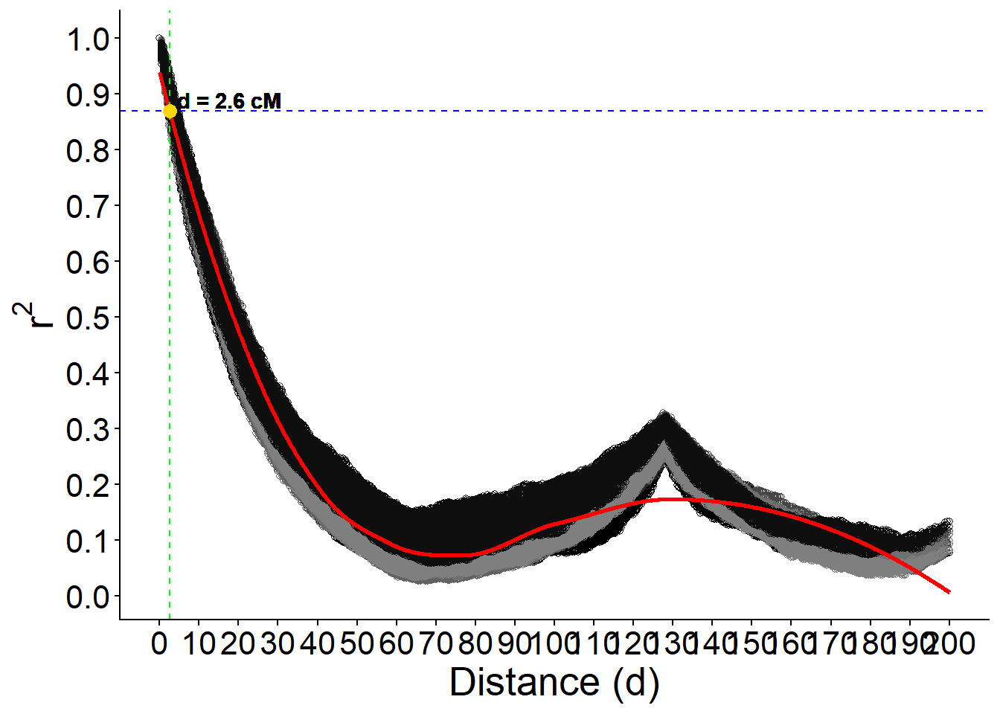

Last updated: 2025-07-29
Checks: 6 1
Knit directory:
Importance-of-markers-for-QTL-detection-by-machine-learning-methods/
This reproducible R Markdown analysis was created with workflowr (version 1.7.1). The Checks tab describes the reproducibility checks that were applied when the results were created. The Past versions tab lists the development history.
The R Markdown file has unstaged changes. To know which version of
the R Markdown file created these results, you’ll want to first commit
it to the Git repo. If you’re still working on the analysis, you can
ignore this warning. When you’re finished, you can run
wflow_publish to commit the R Markdown file and build the
HTML.
Great job! The global environment was empty. Objects defined in the global environment can affect the analysis in your R Markdown file in unknown ways. For reproduciblity it’s best to always run the code in an empty environment.
The command set.seed(20221222) was run prior to running
the code in the R Markdown file. Setting a seed ensures that any results
that rely on randomness, e.g. subsampling or permutations, are
reproducible.
Great job! Recording the operating system, R version, and package versions is critical for reproducibility.
Nice! There were no cached chunks for this analysis, so you can be confident that you successfully produced the results during this run.
Great job! Using relative paths to the files within your workflowr project makes it easier to run your code on other machines.
Great! You are using Git for version control. Tracking code development and connecting the code version to the results is critical for reproducibility.
The results in this page were generated with repository version 854e89e. See the Past versions tab to see a history of the changes made to the R Markdown and HTML files.
Note that you need to be careful to ensure that all relevant files for
the analysis have been committed to Git prior to generating the results
(you can use wflow_publish or
wflow_git_commit). workflowr only checks the R Markdown
file, but you know if there are other scripts or data files that it
depends on. Below is the status of the Git repository when the results
were generated:
Ignored files:
Ignored: .Rproj.user/
Ignored: analysis/figure/
Ignored: output/imp.tot.RData
Ignored: output/mod.rda
Untracked files:
Untracked: output/lddecay.tiff
Unstaged changes:
Modified: analysis/GWAS.Rmd
Modified: analysis/about.Rmd
Modified: analysis/gwas-GLM.Rmd
Modified: analysis/index.Rmd
Modified: analysis/ld_decay.Rmd
Modified: analysis/license.Rmd
Modified: analysis/map.Rmd
Note that any generated files, e.g. HTML, png, CSS, etc., are not included in this status report because it is ok for generated content to have uncommitted changes.
These are the previous versions of the repository in which changes were
made to the R Markdown (analysis/ld_decay.Rmd) and HTML
(docs/ld_decay.html) files. If you’ve configured a remote
Git repository (see ?wflow_git_remote), click on the
hyperlinks in the table below to view the files as they were in that
past version.
| File | Version | Author | Date | Message |
|---|---|---|---|---|
| Rmd | 48e7039 | WevertonGomesCosta | 2025-03-26 | add ld_decay.rmd |
| html | 277ed8b | WevertonGomesCosta | 2025-03-26 | add ld_decay.html |
| Rmd | 06c2d7d | WevertonGomesCosta | 2025-03-25 | update ld_decay.Rmd with plot |
| Rmd | d57532f | WevertonGomesCosta | 2025-03-25 | add ld_decay.rmd |
This document provides a detailed analysis of Linkage Disequilibrium (LD) decay across different linkage groups using genotype and map data. The analysis includes the following steps:
The analysis uses genotype data from a text file and map data from an RDS file. The genotype data contains marker information, while the map data provides the positions and linkage group identifiers for these markers.
The genotype data is loaded from a text file named “GEN.txt”. The first few columns of the data are displayed to give an overview of the structure.
V1 V2 V3 V4 V5
1 0 0 0 0 0
2 0 0 0 0 0
3 0 0 0 0 0
4 -1 -1 -1 -1 -1
5 0 0 0 0 0
6 0 0 0 0 0The map data is loaded from an RDS file named “map.rds”. The data is then transformed to create a new column for locus names, convert positions to numeric, and ensure linkage group identifiers are integers. The structure and summary of the map data are displayed.
mapCP <- readRDS("data/map.rds") %>%
mutate(
Locus = paste0("V", 1:n()),
Position = as.numeric(Tamanho),
LG = as.integer(GL)
) %>%
dplyr::select(Locus, Position, LG)
str(mapCP)'data.frame': 4010 obs. of 3 variables:
$ Locus : chr "V1" "V2" "V3" "V4" ...
$ Position: num 0 0.5 1 1.5 2 2.5 3 3.5 4 4.5 ...
$ LG : int 1 1 1 1 1 1 1 1 1 1 ... Locus Position LG
Length:4010 Min. : 0 Min. : 1.0
Class :character 1st Qu.: 50 1st Qu.: 3.0
Mode :character Median :100 Median : 5.5
Mean :100 Mean : 5.5
3rd Qu.:150 3rd Qu.: 8.0
Max. :200 Max. :10.0 This section performs the LD decay analysis for each linkage group in the genotype data.
The analysis is performed in several steps:
Step 1: Obtain a sorted list of unique linkage groups from the map data.
Step 2: Apply a function to each linkage group using lapply.
Step 2a: For each linkage group, extract the corresponding marker names from the map data. Step 2b: Perform Linkage Disequilibrium (LD) decay analysis on the genotype data for these markers. Step 2c: Filter the LD results to include only significant marker pairs after Bonferroni correction. Step 2d: Check if there are any significant marker pairs. If so, create a data frame including the linkage group identifier and the filtered LD decay results; otherwise, return NULL for that linkage group.
res <- lapply(unique_LGs, function(lg) {
# Step 2a: For the current linkage group 'lg', extract the corresponding marker names
markers <- mapCP %>%
filter(LG == lg) %>% # Filter the map data to include only rows where LG equals the current linkage group
pull(Locus) # Extract the 'Locus' column, which contains marker names
# Step 2b: Perform Linkage Disequilibrium (LD) decay analysis on the genotype data for these markers
LDDecay <- LD.decay(CPgeno[, markers], # Subset the genotype matrix to include only the columns for the current markers
mapCP %>% filter(LG == lg)) # Subset the map data to include only the current linkage group
# Step 2c: Filter the LD results to include only significant marker pairs after Bonferroni correction
A <- LDDecay$all.LG %>% # Access the LD results for all marker pairs
filter(p < 0.05 / choose(length(markers), 2)) # Apply Bonferroni correction to adjust the p-value threshold
# Step 2d: Check if there are any significant marker pairs
if (nrow(A) > 0) {
# If significant pairs exist, create a data frame including the linkage group identifier
data.frame(GL = paste0("lg", lg), # Add a column 'GL' with the linkage group name (e.g., 'lg1', 'lg2', etc.)
A) # Include the filtered LD decay results
} else {
# If no significant pairs are found, return NULL for this linkage group
NULL
}
}) | | | 0% | |======================================================================| 100% | | | 0% | |======================================================================| 100% | | | 0% | |======================================================================| 100% | | | 0% | |======================================================================| 100% | | | 0% | |======================================================================| 100% | | | 0% | |======================================================================| 100% | | | 0% | |======================================================================| 100% | | | 0% | |======================================================================| 100% | | | 0% | |======================================================================| 100% | | | 0% | |======================================================================| 100%The results from the LD decay analysis for all linkage groups are combined into a single data frame. The linkage group identifier is converted to a factor for further analysis.
The loess model is fitted to the LD decay data to smooth the relationship between distance and r² values. The model is saved for later use.
The model is used to predict r² values for a sequence of distances ranging from 0 to the maximum distance in the data. This allows for visualization of the LD decay curve.
To find the distance at which the predicted r² value is approximately 0.2, we identify the index of the closest predicted value to 0.2 and extract the corresponding distance.
# Find the distance where the predicted r² is approximately 0.2
target_r2 <- 0.87
closest_index <- which.min(abs(pred - target_r2))
closest_d <- d_seq[closest_index]
# Display the closest distance and the target r² value
closest_d[1] 2.6Finally, the LD decay curve is plotted, showing the relationship between distance and r² values. The plot includes points for each linkage group, a red line for the predicted values, a blue dashed line for the target r² value, and a green dashed line for the closest distance.
# Create the plot with additional adjustments
# Define a color palette for the linkage groups
color_palette <- colorRampPalette(c('black', 'gray50'))
# Create the ggplot object with the LD decay data
p <- ggplot(dados, aes(x = d, y = r2, colour = GL)) +
geom_point(pch = 21, show.legend = FALSE) +
geom_line(
data = data_pred,
aes(x = d, y = pred),
colour = 'red',
linewidth = 1
) +
geom_hline(yintercept = target_r2,
linetype = "dashed",
color = "blue") +
geom_vline(xintercept = closest_d,
linetype = "dashed",
color = "green") +
geom_point(
aes(x = closest_d, y = target_r2),
data = NULL,
color = "gold",
size = 3
) +
scale_color_manual(values = color_palette(length(unique(dados$GL)))) +
scale_y_continuous(breaks = seq(0, 1, by = 0.1)) +
scale_x_continuous(breaks = seq(0, max(dados$d), by = 10)) +
labs(x = "Distance (d)", y = expression(r^2)) +
theme_classic() +
theme(text = element_text(size = 20))
# Add text annotation for the closest distance and target r² value
p +
geom_text(
aes(
x = closest_d + 15,
y = target_r2,
label = paste("d =", round(closest_d, 2), "cM")
),
data = NULL,
nudge_y = 0.02,
color = "black",
fontface = "bold"
)
R version 4.4.1 (2024-06-14 ucrt)
Platform: x86_64-w64-mingw32/x64
Running under: Windows 11 x64 (build 26100)
Matrix products: default
locale:
[1] LC_COLLATE=Portuguese_Brazil.utf8 LC_CTYPE=Portuguese_Brazil.utf8
[3] LC_MONETARY=Portuguese_Brazil.utf8 LC_NUMERIC=C
[5] LC_TIME=Portuguese_Brazil.utf8
time zone: America/Sao_Paulo
tzcode source: internal
attached base packages:
[1] stats graphics grDevices utils datasets methods base
other attached packages:
[1] ggrepel_0.9.6 dplyr_1.1.4 ggplot2_3.5.2 sommer_4.4.2 crayon_1.5.3
[6] MASS_7.3-60.2 Matrix_1.7-0
loaded via a namespace (and not attached):
[1] gtable_0.3.6 jsonlite_2.0.0 compiler_4.4.1 promises_1.3.3
[5] tidyselect_1.2.1 Rcpp_1.1.0 stringr_1.5.1 git2r_0.36.2
[9] later_1.4.2 jquerylib_0.1.4 scales_1.4.0 yaml_2.3.10
[13] fastmap_1.2.0 lattice_0.22-7 R6_2.6.1 generics_0.1.4
[17] workflowr_1.7.1 knitr_1.50 tibble_3.3.0 rprojroot_2.0.4
[21] RColorBrewer_1.1-3 bslib_0.9.0 pillar_1.11.0 rlang_1.1.6
[25] cachem_1.1.0 stringi_1.8.7 httpuv_1.6.16 xfun_0.52
[29] fs_1.6.6 sass_0.4.10 cli_3.6.5 withr_3.0.2
[33] magrittr_2.0.3 digest_0.6.37 grid_4.4.1 rstudioapi_0.17.1
[37] lifecycle_1.0.4 vctrs_0.6.5 evaluate_1.0.4 glue_1.8.0
[41] farver_2.1.2 whisker_0.4.1 rmarkdown_2.29 tools_4.4.1
[45] pkgconfig_2.0.3 htmltools_0.5.8.1